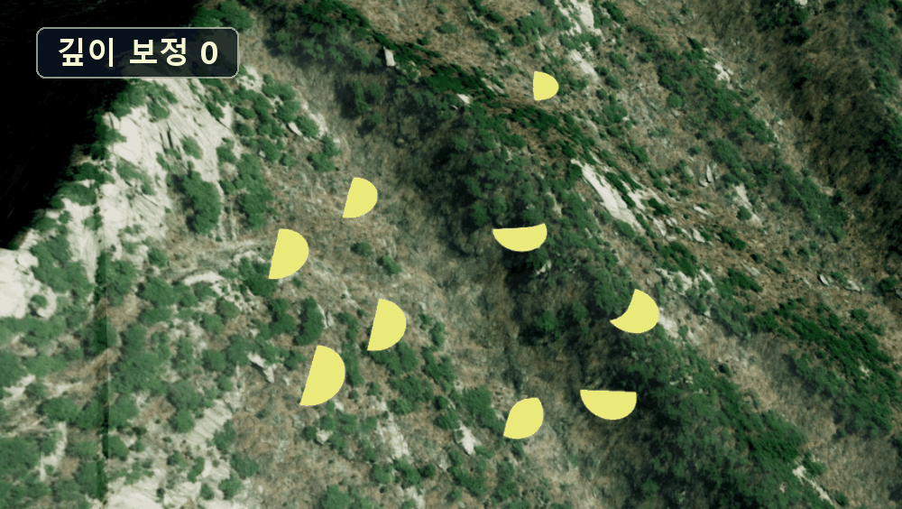
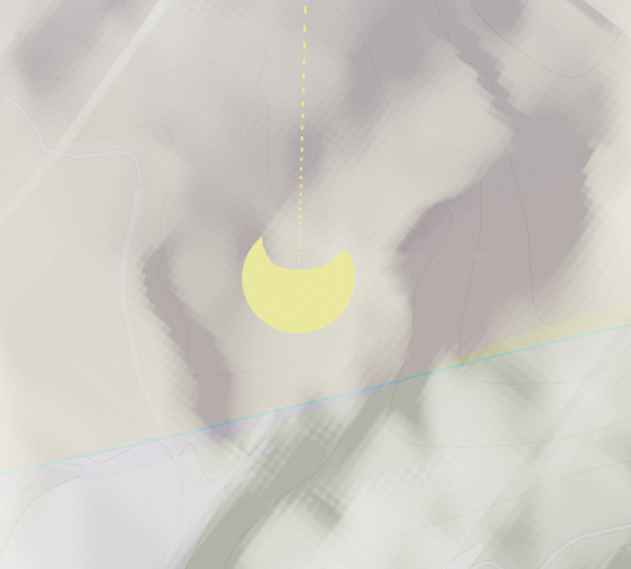
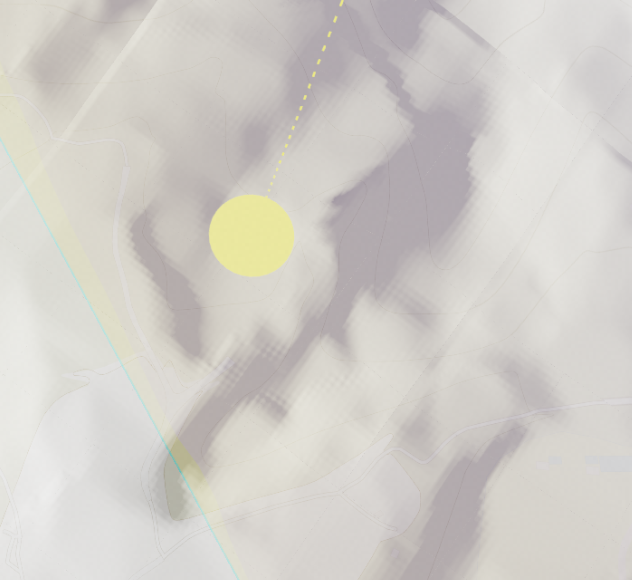
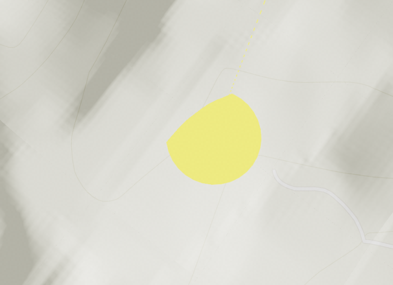
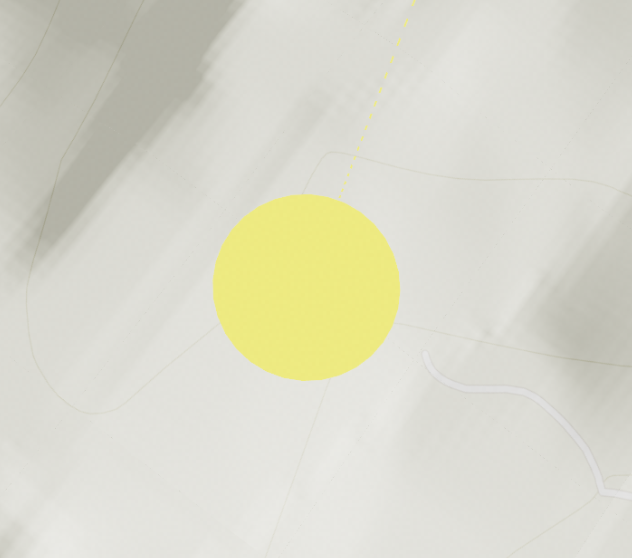
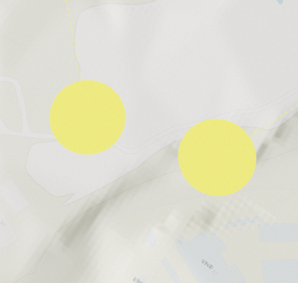
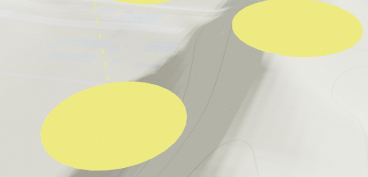

깊이 보정
목차

깊이 보정은 지면에 놓인 도형이 지형에 묻혀 잘려 보이는 것을 완화하는 기능입니다.
도형의 위치는 그대로 두고 깊이 판정에 쓰는 값만 카메라 쪽으로 당깁니다.
- 깊이 테스트(depth test): 같은 화면 위치에 두 물체가 겹칠 때 카메라에 더 가까운 쪽만 그리는 판정입니다.
- 깊이 보정(depth offset): 도형을 실제로 옮기지 않고, 깊이 테스트에 제출하는 거리만 줄여 조금 더 앞에 있는 것처럼 판정받게 하는 것입니다.
- 지형 실측: 도형 주변과 시선 경로의 지형 높이를 조회해 도형이 실제로 얼마나 묻히는지 재는 동작입니다.
1. 깊이 보정 시작하기
지면에 붙는 도형은 경사면에서 지형에 잘립니다.
원판이나 평면처럼 납작한 도형은 기준 지점을 도형 중심에 두므로, 경사면에서는 도형 가장자리 쪽 지형이 도형보다 높이 솟아 도형을 덮습니다.
도형을 위로 띄우면 표시 위치가 실제 지점과 어긋납니다.
깊이 보정은 위치를 그대로 둔 채 깊이 테스트에 제출하는 값만 당기므로, 화면상 크기와 위치는 변하지 않고 가려짐 판정만 바뀝니다.
depthOffset은 모든 도형이 공통으로 가지는 옵션입니다.U3dCylinder, U3dCircle, U3dBox 등 도형 종류와 무관하게 같은 방식으로 사용합니다.
외곽선을 켠 도형은 외곽선에도 같은 보정이 함께 적용됩니다.
깊이 테스트 자체는 그대로 켜져 있습니다. 보정 범위를 넘어 앞에 있는 객체는 여전히 이 도형을 가립니다.
API
U3dGeometry.setDepthOffset(depthOffset) : 깊이 보정값을 미터 단위로 지정하는 함수
매개변수
depthOffset(number) : 카메라 쪽으로 당길 거리(m).0이나undefined를 넣으면 고정 보정을 사용하지 않습니다
API
U3dGeometry.getDepthOffset() : 현재 깊이 보정값을 반환하는 함수
반환값
return(number | undefined) : 깊이 보정값(m). 보정을 사용하지 않으면undefined
1. 보정 전과 후 비교
경사면에 놓인 원판입니다.
보정을 주지 않으면 지형이 원판을 덮어 원이 조각나고, 보정을 주면 온전한 원으로 보입니다.


2. 고정 보정값 사용하기
depthOffset만 지정하면 지정한 값이 그대로 유지되는 고정 보정입니다.
지형 변화가 크지 않거나 필요한 보정량을 미리 알 수 있는 경우에 적합합니다.
값은 크게 줄수록 더 두꺼운 지형을 뚫지만, 보정 범위 안에 있는 다른 객체까지 함께 뚫고 보이게 됩니다.
지형을 가리는 데 필요한 최소값으로 두는 것이 좋습니다.
1. 생성 시 지정 예제
도형을 만들 때 옵션으로 넘기는 방식입니다.
const disc = new GeOnDT.geom.U3dCylinder({
radiusTop: 5,
radiusBottom: 5,
height: 5,
color: '#ff0000',
depthOffset: 10 // 10m 만큼 카메라 쪽으로 당깁니다.
});
2. 생성 후 변경 예제
이미 만들어진 도형은 setDepthOffset으로 값을 바꿉니다.
// 보정값을 20m로 변경합니다.
disc.setDepthOffset(20);
// 보정을 끕니다.
disc.setDepthOffset(0);
setParam으로 다른 속성과 함께 지정할 수도 있습니다.
disc.setParam({
color: '#ff0000',
opacity: 1.0,
depthOffset: 10
});
3. 보정값에 따른 차이
같은 경사면이라도 보정값이 부족하면 지형을 다 뚫지 못해 일부가 잘린 채로 남습니다.


3. 지형에 맞춰 자동 보정하기
dynamicDepthOffset을 켜면 렌더 직전마다 도형 주변 지형을 실측해 필요한 만큼만 보정합니다.
고정값과 달리 경사가 바뀌거나 카메라 각도가 바뀌어도 보정량이 따라갑니다.
경사가 일정하지 않은 지형 위를 이동하는 도형에 적합합니다.
고정값 하나로는 완만한 곳에서 과하고 급경사에서 부족해지기 때문입니다.
API
U3dGeometry.setDynamicDepthOffset(enabled) : 렌더 직전에 지형 묻힘 정도를 자동으로 측정할지 지정하는 함수
매개변수
enabled(boolean) : 자동 측정 사용 여부. 기본값:false
API
U3dGeometry.getDynamicDepthOffset() : 자동 측정 사용 여부를 반환하는 함수
반환값
return(boolean) : 자동 측정 사용 여부
1. 자동 보정 사용 예제
dynamicDepthOffset만 켜면 됩니다.
보정값은 매 프레임 지형에서 직접 구하므로 따로 지정하지 않습니다.
const disc = new GeOnDT.geom.U3dCylinder({
radiusTop: 5,
radiusBottom: 5,
height: 5,
color: '#ff0000',
dynamicDepthOffset: true // 매 프레임 지형을 실측해 보정
});
생성 후에 켜고 끌 수도 있습니다.
disc.setDynamicDepthOffset(true);
2. 경사에 따른 보정 결과
자동 보정은 같은 도형이라도 지형 경사에 따라 다른 값을 적용합니다.
완만한 곳에서는 적게, 급경사에서는 많이 당깁니다.
값을 따로 지정하지 않아도 두 경우 모두 잘림 없이 표시됩니다.


4. 보정값 직접 계산하기
자동 보정이 적용하는 값을 직접 정하고 싶다면 setDepthOffsetFunction으로 계산 함수를 넘깁니다.dynamicDepthOffset이 켜져 있을 때만 호출됩니다.
측정 함수는 도형과 카메라 정보를 인자로 받아 미터 단위 보정값을 반환해야 합니다.
반환값이 숫자가 아니거나 음수이면 보정하지 않습니다.
API
U3dGeometry.setDepthOffsetFunction(func) : 자동 보정에 사용할 측정 함수를 지정하는 함수
매개변수
func(function) : 보정값 측정 함수. 미터 단위 숫자를 반환해야 합니다. 필수
측정 함수는 다음 항목을 담은 객체 하나를 인자로 받습니다.
drawArg(UDrawArg) : 지형 높이 조회 객체object(Object3D) : 보정 대상 도형camPos(Vector3) : 카메라 월드 좌표size(number) : 도형 크기(경계 상자 최장변의 절반, 월드 단위)cameraDistance(number) : 카메라에서 도형 중심까지의 거리(월드 단위)
인자로 받는 size와 cameraDistance는 월드 단위이고, 돌려줄 값은 미터입니다.
월드 1단위는 cos(위도) 미터이므로 두 단위는 서로 다릅니다.
아래 예제에서 곱하는 계수는 화면을 보며 맞추는 값이며, 정확한 거리를 계산해야 한다면 GeOnDT.UMathEngine.getRealScaleAtGoogle(y)로 월드 단위를 미터로 환산해 사용합니다.
API
U3dGeometry.getDepthOffsetFunction() : 현재 지정된 측정 함수를 반환하는 함수
반환값
return(function | undefined) : 측정 함수. 지정하지 않았으면undefined
1. 카메라 거리에 비례한 보정 예제
카메라가 멀어질수록 보정을 키워 원거리에서도 도형이 보이게 합니다.
disc.setDepthOffsetFunction(({cameraDistance}) => {
// 카메라 거리의 0.1%를 보정값(m)으로 사용합니다.
return cameraDistance * 0.001;
});
2. 상한을 둔 보정 예제
도형 크기를 기준으로 보정값을 정하되 최대치를 제한합니다.
disc.setDepthOffsetFunction(({size, cameraDistance}) => {
const offset = size * 2;
// 카메라가 가까울 때 과하게 당겨지지 않도록 상한을 둡니다.
return Math.min(offset, cameraDistance * 0.05);
});
3. 도형마다 다른 보정 예제
object로 도형을 구분해 종류별로 다른 값을 돌려줄 수 있습니다.
disc.setDepthOffsetFunction(({object, size}) => {
// 이름으로 도형을 구분해 보정량을 다르게 적용합니다.
if (object.name.startsWith('marker')) {
return size * 3;
}
return size;
});